1 引言
- 网络分析关注节点和节点间的连接
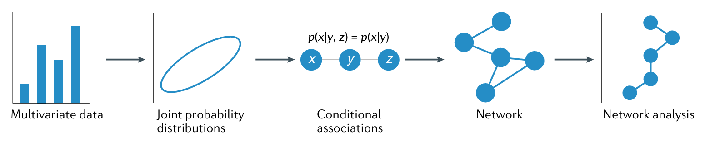
网络分析可达成以下3种目标
- 对高维数据进行探索
- 有效传达多元依赖模式
- 产生因果假设
从人格研究、态度研究、心理健康三个角度展示心理学中的网络分析
2 实验过程
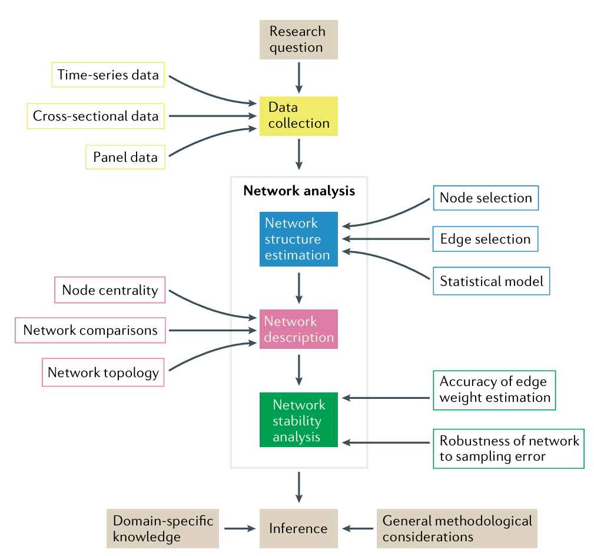
- 网络分析核心环节是网络结构估计、网络描述和网络稳定性分析
- 使用条件关联（conditional association）来定义网络结构
- 条件关联强度用边权重（edge weight）表示
- 多元正态数据使用偏相关
- 二元数据使用逻辑回归
- 如果控制其他变量后两节点条件关联消失，则无连接
- 成对马尔可夫随机场（pairwise Markov random field，PMRF）是常见的网络模型的估计方法
- 显著性检验、交叉验证、信息过滤和正则化估计等可用于检验
- 条件关联强度用边权重（edge weight）表示
3 数据类型
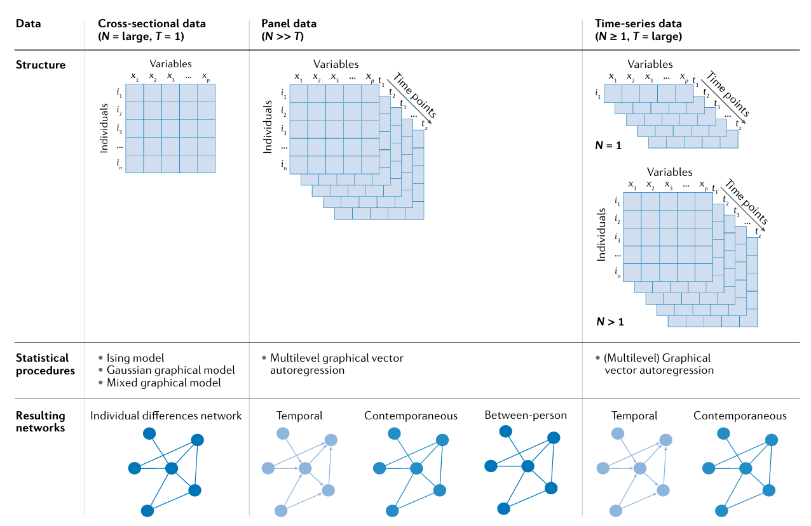
3.1 横断数据（Cross- sectional data）
- 变量之间的关联源于个体差异
- 案例
- 研究三个人格层级结构和个人目标之间的关系
特质（trait）、层面（facet）、特定单项
可以获得比因子模型更精细的划分
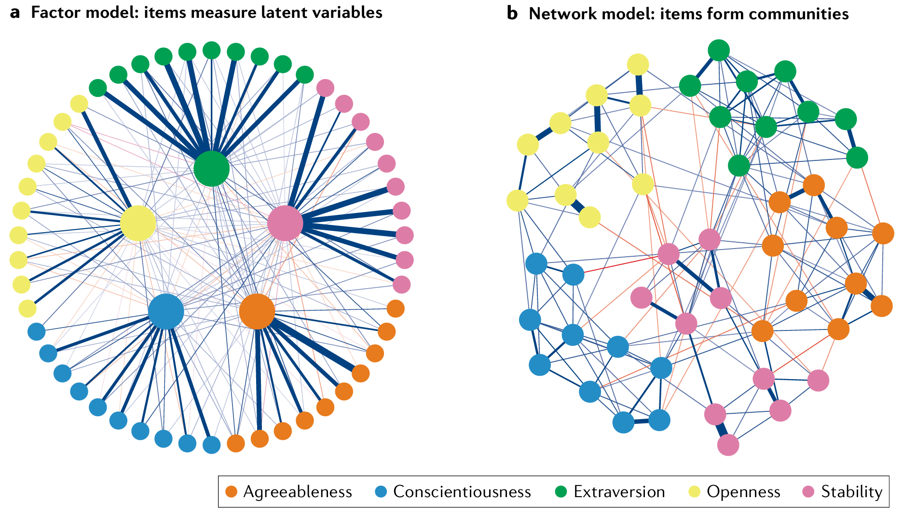
因子模型（左）和网络模型（右）
- 432个样本，39个目标变量
- 研究三个人格层级结构和个人目标之间的关系
- 只能解释个体差异，不能反应过程
3.2 面板数据（Panel data）
- 纵向数据
- 可解释个体差异和个体内部变化
- 案例
- 1992到1996年对比尔·克林顿的情绪和信念的重复测量，可反应他从阿肯色州州长过渡到美国总统期间群众对他态度的变化
- 态度网络模型
原理：当态度对个体重要且个体注意力聚焦于态度对象时，态度要素间的相互依赖性增加
态度重要性和关注用温度（temperature）下降来表示，在模型中表示为熵（entropy）降低，节点间关系更紧密
低温下，个体内部方差小，整体方差大，会形成极化（polarization）的双峰分布
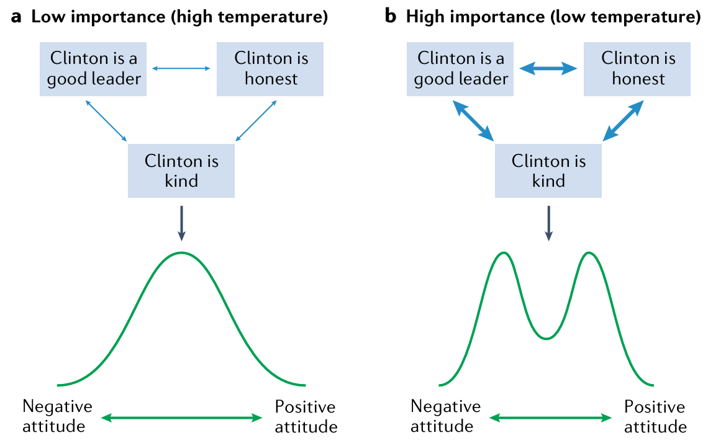
不同温度下态度分布
3.3 时间序列数据（Time- series data）
- 可解释个体内所测量的变量在时间序列之间的多元依赖性
- 案例
- 疫情期间，社交接触减少对荷兰莱顿大学学生心理健康的影响
- 两周，每天四次，即时社交接触和当下的压力、焦虑和抑郁
- 分离个体差异和时间变化的影响
4 结果
- PMRF无先验条件要求且允许条件独立性，适合探索性分析
- 网络分析仅需使用可能参数中的一部分就能很好的描述数据
- PMRF结果是唯一的，不存在等价结果
- 统计方法
- 连续数据：高斯图模型（Gaussian graphical model），偏相关
- 二元数据：伊辛模型（Ising model），对数-线性关系（log-linear relationship）
- 混合数据：混合图模型（mixed graphical model），广义线性回归
4.1 横断数据
- 前提假设是个体相互独立
4.2 时间序列数据
- 为解决时间依赖性（time dependency）问题，引入时间效应（temporal effect）
- 向量自回归后接着使用PMRF，得到同期网络（contemporaneous network）
- 得到两个模型
- 时间网络（temporal network）
- 根据时间差异研究延续效应（carryover effect）
- 有向，帮助进行因果推断
- 同期网络
- 被试内
- 控制时间效应后变量间的关系
- 无向，仅表示相关，因果推断需要谨慎
- 时间网络（temporal network）
4.3 面板数据
- 除时间网络、同期网络外，还有被试间网络
- 类似横断数据的网络，基于时间序列的均值
4.4 边选择
- 拟合指数：正则化估计等
- 零假设检验
- 交叉验证
4.5 网络描述
- 全局层面需要区分稀疏（sparse）网络与稠密（dense）网络
- 正则化的方法在稀疏网络中表现更好
- 稀疏网络中单个节点的重要性更为突出
- 局部层面
- 节点指标
- 节点强度（strength）：某一节点的边权重绝对值的和
- 接近中心性（closeness）：某一节点到其他节点的最短路径长度的平均值
- 中介中心性（betweenness）：除某一节点外，其他节点之间的最短距离是否经过该节点的平均值
- 预期影响力（expected influence）：节点为二元编码或者可二元化，0变1或1变0时引发的变化
- 可预测性（predictability）：某一节点的变异在多大程度上可以由与其相连节点的变异所预测，类似R2
- 参与系数（participation coefficient）、最小生成树（minimal spanning tree）、派系渗透（clique percolation）等
- 节点间最短路径：观察最强预测路径
- 聚类：潜在未观察到的原因和维度
- 节点指标
5 应用
5.1 人格研究
- 人格网络可以在不同水平上表征人格，从特质到子层面再到具体题项
- 需要在简洁性和准确性之间取得平衡
- 案例包含9个与尽责性相关的目标、30个基于形容词的题目，题目可分为勤勉性（industriousness）、冲动控制（impulse control）和条理性（orderliness）3个层面
5.1.1 数据与分析
432个样本，高斯模型，十折交叉验证，lasso正则化(\(\lambda=0.5\)，基于extended Bayesian information criterion，EBIC)
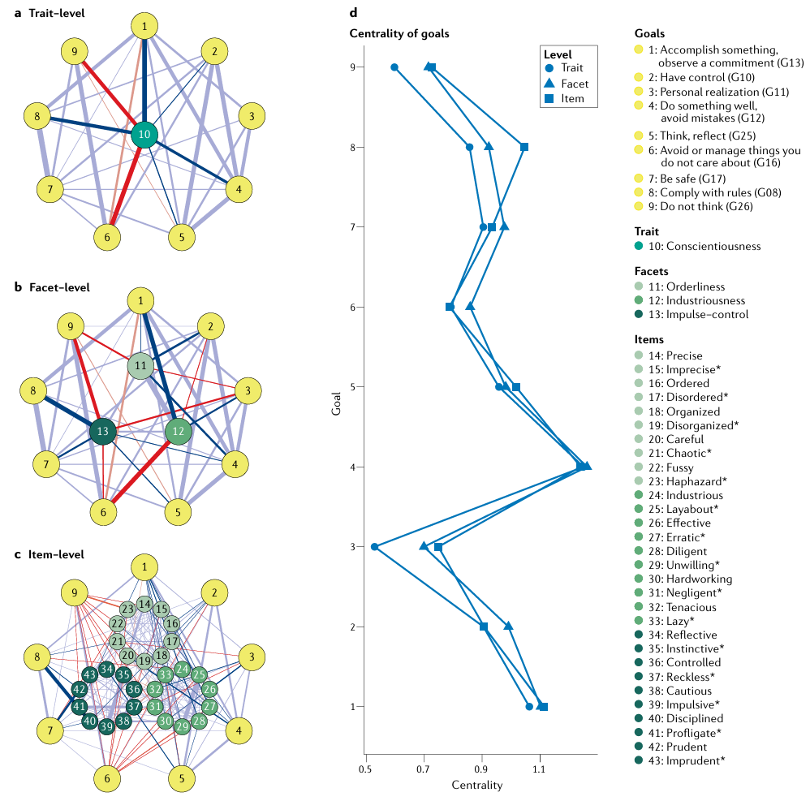
人格研究结果 - 特质水平网络3和7未直接关联
- 层面水平网络大多数目标仅与1到2个层面关联
- 题项水平网络与层面水平网络类似，但6与条理性相关题项关联
5.1.2 结果
4（做好事情，避免错误）强度一直最高，主要源于和其他目标的连接，可能因为4是实现其他目标的手段
\(R^2\)
Level G08(8) G10(2) G11(3) G12(4) G13(1) G16(6) G17(7) G25(5) G26(9) Trait 0.458 0.527 0.342 0.665 0.547 0.309 0.440 0.580 0.234 Facet 0.477 0.538 0.357 0.668 0.566 0.311 0.445 0.582 0.245 Item 0.516 0.538 0.370 0.679 0.567 0.296 0.459 0.590 0.244 特质水平预测效果均不是最好的，层次水平可能是简洁性和准确性的平衡点
5.2 态度研究
- 观测比尔・克林顿就职前总统后群众态度网络的温度变化，预期担任总统期间温度更低（关注增强）
- 使用不同时间点态度要素间相关强度的变化来估计网络温度
- 个体对特定议题的关注度，以及他们对该议题重要性的判断也可以判断温度，但本研究未使用
5.2.1 数据与分析
- 美国全国选举研究（ANES），信念是4点量表（非常符合克林顿特质到非常不符合），情感是二分类变量（是否有过这种感受）
- 伊辛模型
- 逐步调整约束条件
- 约束节点之间的边在不同时间点上相等
- 约束外场（External Field）在不同时间点上保持不变
- 约束系统温度在不同时间点上保持不变
- 稠密网络与稀疏网络对比
- 游走陷阱算法（walktrap algorithm）对网络进行社区检测
- 两个节点之间的随机游走路径足够短，则将这两个节点归为同一社区
5.2.2 结果
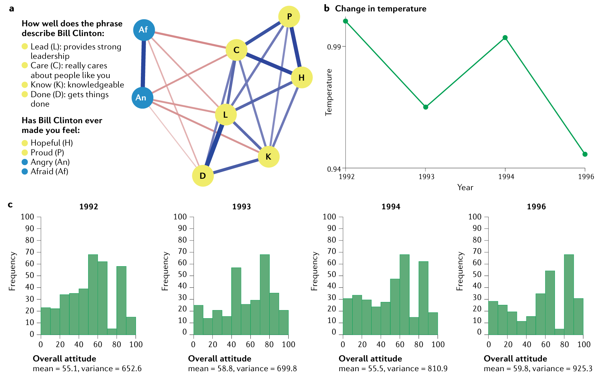
- 外场与温度随时间变化的稀疏模型拟合效果最好
- 不同时间点的边无显著差异
- 图a
- 态度要素与其他所有态度要素存在间接连接
- 正面情感和负面情感均彼此紧密联系
- 两个社区：包含所有信念与正面情感的大社区，仅包含负面情感的小社区
- 图b
- 1996年大选前温度出现断崖式下降，说明特异性和坚定性增强
- 图c
- 总体态度采用独立的0-100分量表测量，得分越高代表对克林顿的态度越积极
- 态度网络温度与总体态度分布的方差呈显著负相关
5.3 心理健康研究
5.3.1 数据与分析
- 生态瞬时评估研究， 80名学生，2周，60女，19男，1其他，19个国家，50单身，约1/3有兼职，1/5有过心理健康问题
- 每天4次，担忧、悲伤、易怒程度及其他主观现象学体验
- 同期网络刻画同一评估窗口内变量间的关系，时序网络则刻画滞后1期的关系
5.3.2 结果
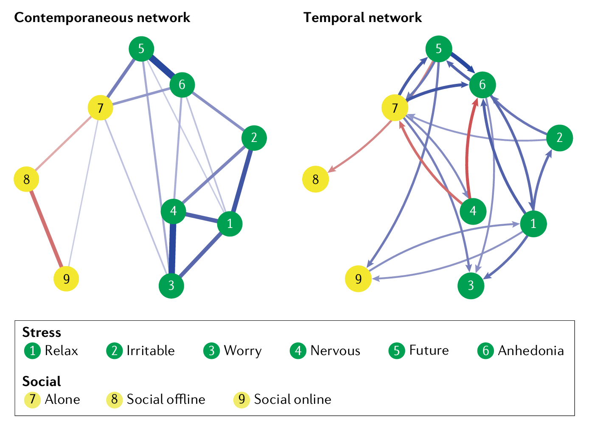
- 部分节点在同期中有强关联，但时序网络中未出现
- 线下社交互动（8）与担忧（3）的同期关联是通过孤独感（7）中介的
- 线下社交互动与更低水平的孤独感存在关联，而线上社交互动则与更高水平的孤独感相关
- 难以构想未来与难以放松能够预测后续的线上社交互动，而线上社交互动又会预测后续的难以放松
- 可以从降低节点的平均水平和打断连接两个角度进行干预
6 可重复性和数据展示
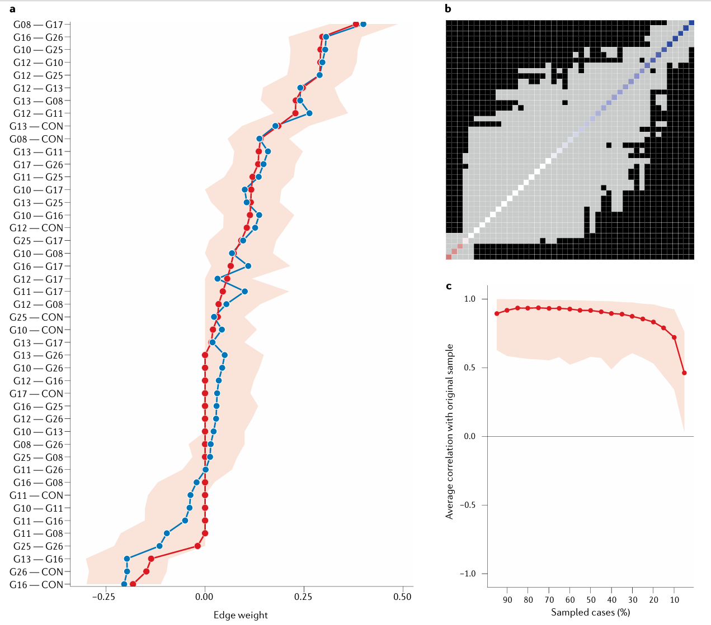
- 自助法、置换检验等重抽样技术，贝叶斯统计，调节效应网络分析和多组分析
- 单个边权重估计值（a）、网络中边与边之间的差异（b）、基于网络结构定义的拓扑指标（c）
- 因为抽样差异，不期望完全一致
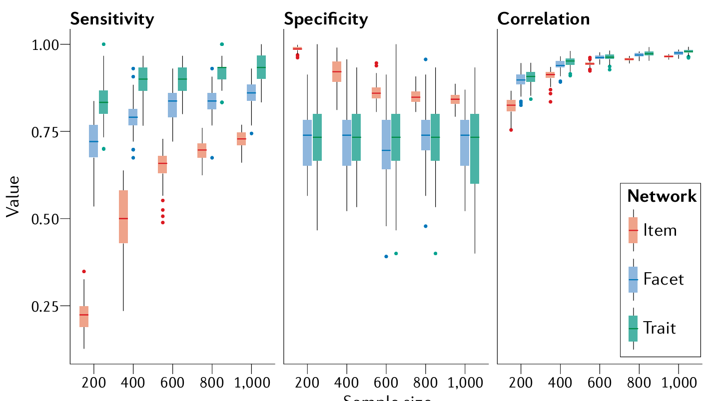
- 模拟数据检查包含边和排除边的概率以及相关性
- 最低共享规范
- 样本与变量的选择
- 变量间确定性关系和跳题结构的存在情况
- 使用的估计方法和所有附加说明
- 边估计值的准确性和稳定性评估方法
- 使用的统计软件和包及其版本
7 局限性和优化方向
7.1 网络结构估计
- 有序分类数据的处理方法缺乏
- 需要关注稠密网络的研究，非正则化估计方法
- 缺失数据需要处理，全信息极大似然法
7.2 结果解释
- 无法保证未被选中的边在统计上与零无显著差异，稀疏网络无法检验
- 贝叶斯方法
- 网络结构取决于所纳入的变量，如果遗漏了重要节点，会影响网络结构
- 中心性并非因果影响力的良好指标，接近中心性和介数中心性可能无实际意义
- 关注不同的时间尺度
- 无明确指南说明每种指标对应的合理解释
7.3 因果推断
- PMRF是一对多关系，存在多种可能
- 因果搜索算法(causal search algorithms)
- 不解释因果
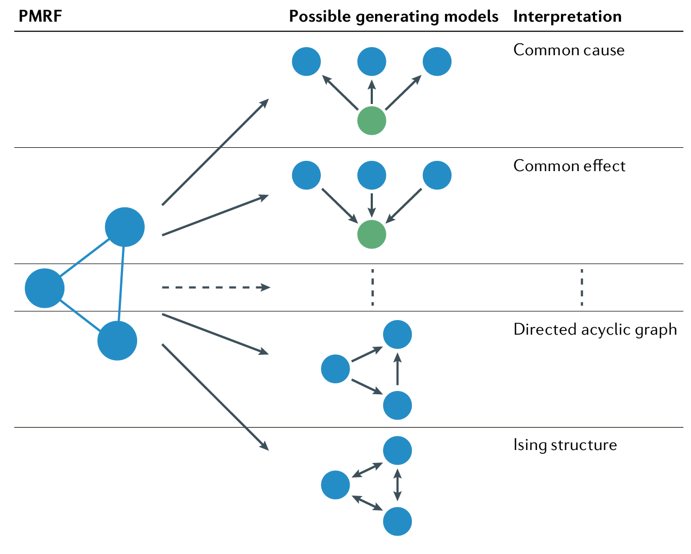
7.4 验证性检验
- 不同参数约束方法可以进行检验
- 边权重约束为特定值
- 约束多条边具有相同的权重
- 约束边权重在不同群体间保持相等
- psychonetrics包和贝叶斯方法
- 基于探索性网络分析生成假设
- 探索性网络分析结果，约束估计为零的边后在新数据集上约束
- 贝叶斯因子检验边权重强度顺序
- 基于实质理论生成假设
- 将假设转化为对网络结构的约束
- 缺乏统一的有效手段
8 展望
- 探索性分析
- 连接数据分析和基于网络科学原理的理论构建
- 连接个体间差异研究和个体内机制研究
- 促进不同科学学科之间的交流
参考文献
Borsboom, D., Deserno, M. K., Rhemtulla, M., Epskamp, S., Fried, E. I., McNally, R. J., Robinaugh, D. J., Perugini, M., Dalege, J., Costantini, G., Isvoranu, A.-M., Wysocki, A. C., Borkulo, C. D. van, Bork, R. van, & Waldorp, L. J. (2021). Network analysis of multivariate data in psychological science. Nature Reviews Methods Primers, 1(1), 58. https://doi.org/10.1038/s43586-021-00055-w